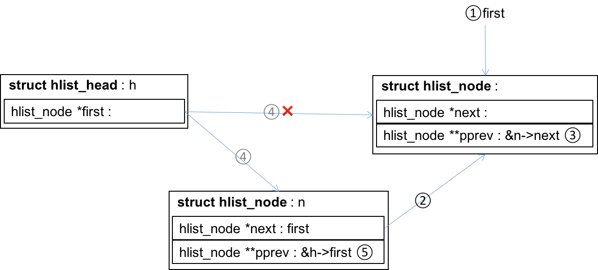
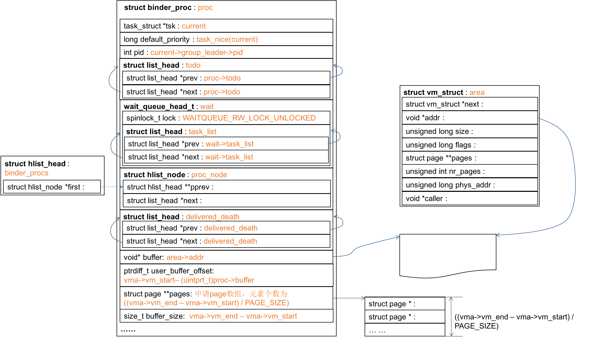
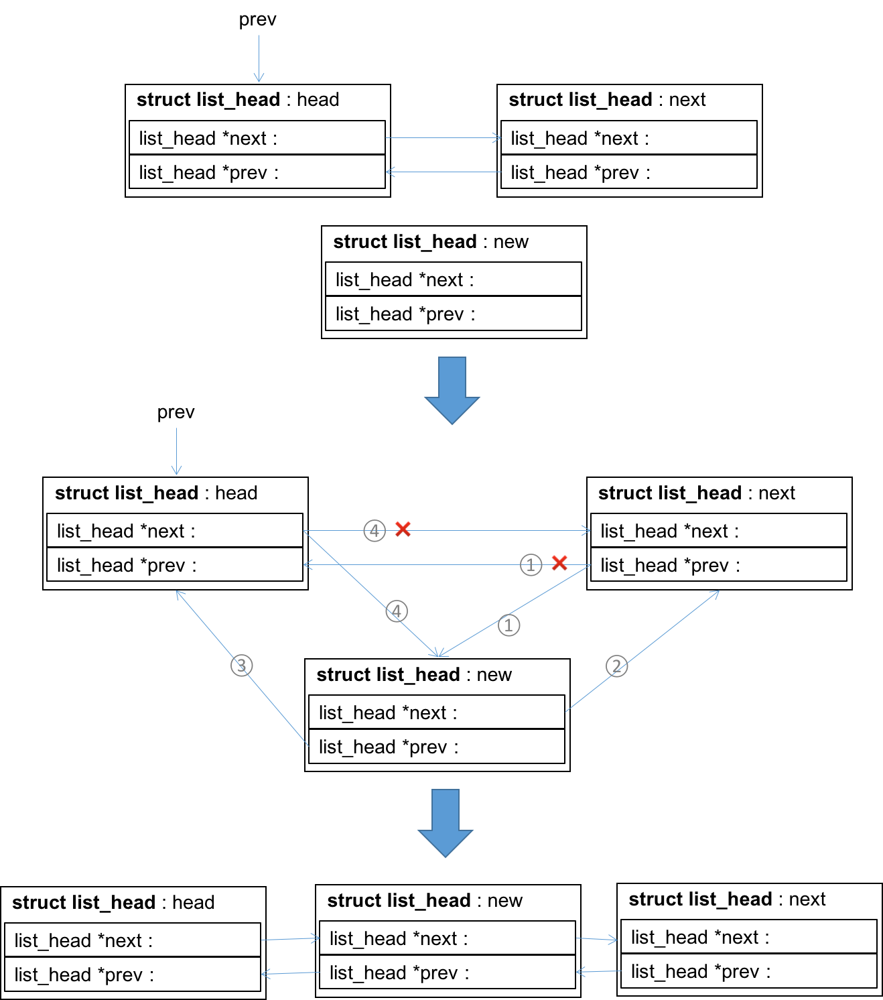
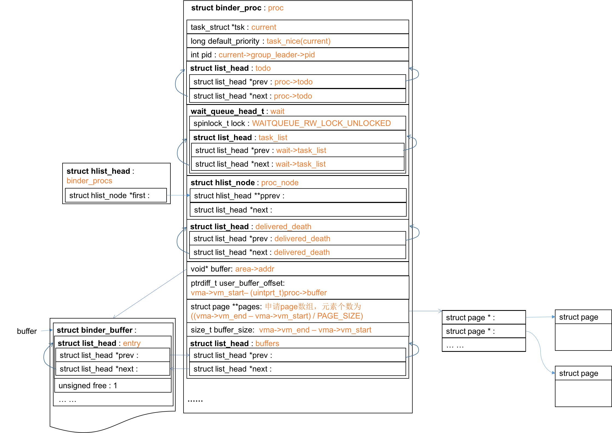
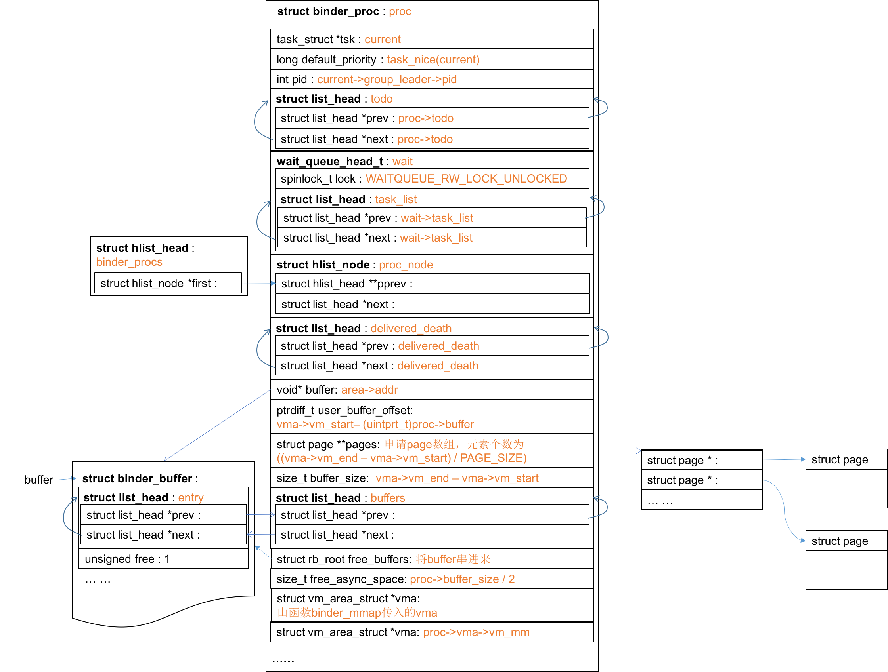
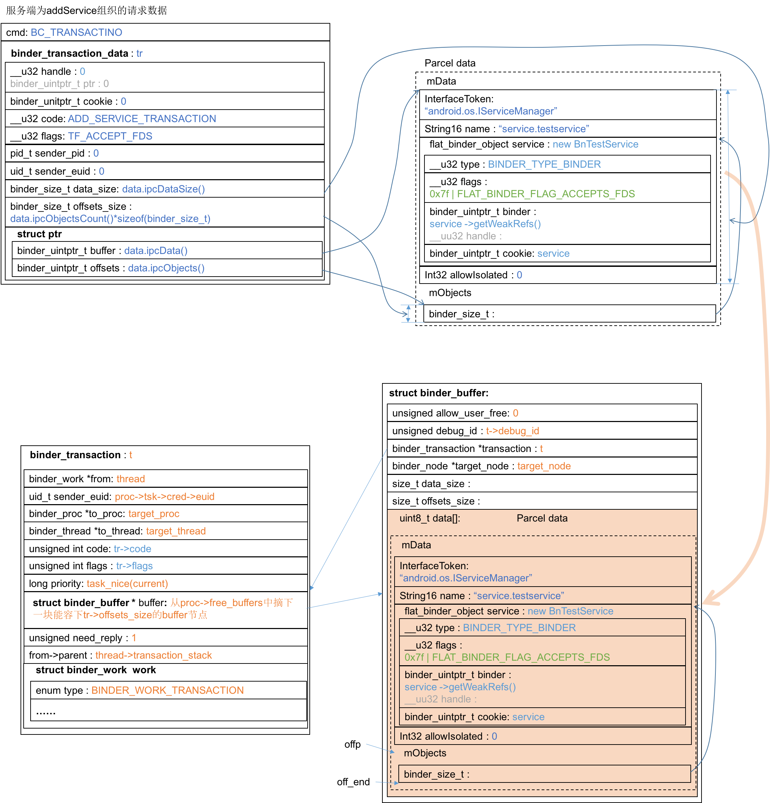
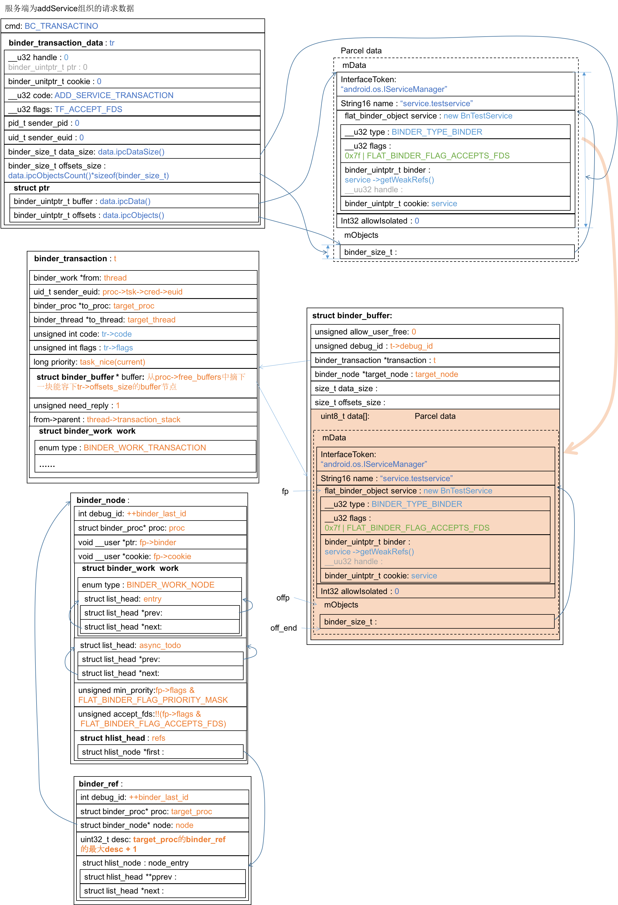
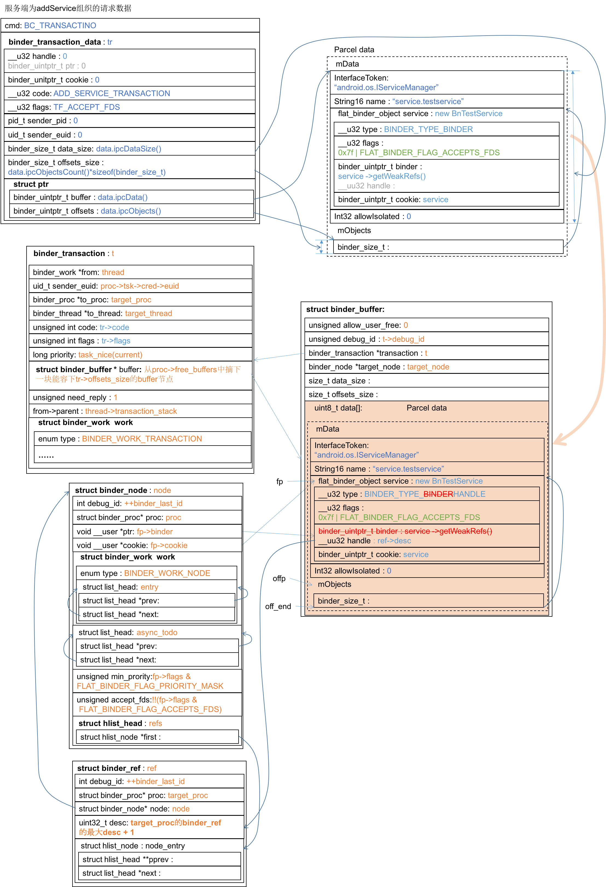

Binder学习笔记（十二）—— binder_transaction(...)都干了什么？
binder_open(…)都干了什么？
在回答binder_transaction(…)之前，还有一些基础设施要去探究，比如binder_open(…)，binder_mmap(…)，这些调用是在打开设备文件/dev/binder之后必须完成的程式化操作，而在它们内部需要做一些数据结构的准备。首先来看binder_open(…)
kernel/drivers/staging/android/binder.c:29791
2
3
4
5
6
7
8
9
10
11
12
13
14
15
16
17
18
19
20
21
22static int binder_open(struct inode *nodp, struct file *filp)
{
struct binder_proc *proc;
......
proc = kzalloc(sizeof(*proc), GFP_KERNEL); // 创建binder_proc结构体
......
get_task_struct(current);
proc->tsk = current;
INIT_LIST_HEAD(&proc->todo); // 初始化链表头
init_waitqueue_head(&proc->wait);
proc->default_priority = task_nice(current);
......
// 将proc_node串入全局链表binder_procs中
hlist_add_head(&proc->proc_node, &binder_procs);
proc->pid = current->group_leader->pid;
INIT_LIST_HEAD(&proc->delivered_death);
filp->private_data = proc;
......
return 0;
}
binder_open(…)生成并初始化binder_proc结构体如下：
struct binder_proc
struct binder_proc描述一个“正在使用Binder进程间通信机制”的进程，它的定义参见kernel/goldfish/drivers/staging/android/binder.c:2861
2
3
4
5
6
7
8
9
10
11
12
13
14
15
16
17
18
19
20
21
22
23
24
25
26
27
28
29
30
31
32
33
34
35
36
37
38
39
40
41
42
43
44
45
46
47
48
49
50
51
52
53
54
55
56
57
58
59
60
61
62
63
64
65
66
67
68
69
70
71
72struct binder_proc {
// 进程打开设备文件/dev/binder时，Binder驱动会为它创建一个binder_proc结构体，并将它
// 保存在全局hash列表中，proc_node是该hash列表的节点。
struct hlist_node proc_node;
// 每个使用了Binder机制的进程都有一个Binder线程池，用来处理进程间通信请求。threads以
// 线程ID作为key来组织进程的Binder线程池。进程可以调用ioctl将线程注册到Binder驱动中
// 当没有足够的空闲线程处理进程间通信请求时，驱动可以要求进程注册更多的线程到Binder线程
// 池中
struct rb_root threads;
struct rb_root nodes; // 组织Binder实体对象，它以成员ptr作为key
struct rb_root refs_by_desc; // 组织Binder引用对象，它以成员desc作为key
struct rb_root refs_by_node; // 组织Binder引用对象，它以成员node作为key
int pid; // 指向进程组ID
struct vm_area_struct *vma; // 内核缓冲区的用户空间地址，供应用程序使用
struct mm_struct *vma_vm_mm;
struct task_struct *tsk; // 指向进程任务控制块
struct files_struct *files; // 指向进程打开文件结构体数组
// 一个hash表，保存进程可以延迟执行的工作项，这些延迟工作有三种类型
// BINDER_DEFERRED_PUT_FILES、BINDER_DEFERRED_FLUSH、BINDER_DEFERRED_RELEASE
// 驱动为进程分配内核缓冲区时，会为该缓冲区创建一个文件描述符，进程可以通过该描述符将该内
// 核缓冲区映射到自己的地址空间。当进程不再需要使用Binder机制时，就会通知驱动关闭该文件
// 描述符并释放之前所分配的内核缓冲区。由于这不是一个马上就要完成的操作，因此驱动会创建一
// 个BINDER_DEFERRED_PUT_FILES类型的工作来延迟执行；
// Binder线程池中的空闲Binder线程是睡眠在一个等待队列中的，进程可以通过调用函数flush
// 来唤醒这些线程，以便它们可以检查进程是否有新的工作项需要处理。此时驱动会创建一个
// BINDER_DEFERRED_FLUSH类型的工作项，以便延迟执行唤醒空闲Binder线程的操作；
// 当进程不再使用Binder机制时，会调用函数close关闭文件/dev/binder，此时驱动会释放之
// 前为它分配的资源，由于资源释放是个比较耗时的操作，驱动会创建一个
// BINDER_DEFERRED_RELEASE类型的事务来延迟执行
struct hlist_node deferred_work_node;
int deferred_work; // 描述该延迟工作项的具体类型
void *buffer; // 内核缓冲区的内核空间地址，供驱动程序使用
ptrdiff_t user_buffer_offset; // vma和buffer之间的差值
// buffer指向一块大的内核缓冲区，驱动程序为方便管理，将它划分成若干小块，这些小块的内核缓
// 冲区用binder_buffer描述保存在列表中，按地址从小到大排列。buffers指向该列表的头部。
struct list_head buffers;
struct rb_root free_buffers; // buffers中的小块有的正在使用，被保存在此红黑树
struct rb_root allocated_buffers; // buffers中的空闲小块被保存在此红黑树
size_t free_async_space; // 当前可用的保存异步事务数据的内核缓冲区的大小
struct page **pages; // buffer和vma都是虚拟地址，它们对应的物理页面保存在pages
// 中，这是一个数组，每个元素指向一个物理页面
size_t buffer_size; // 进程调用mmap将它映射到进程地址空间，实际上是请求驱动为它
// 分配一块内核缓冲区，缓冲区大小保存在该成员中
uint32_t buffer_free; // 空闲内核缓冲区的大小
struct list_head todo; // 当进程接收到一个进程间通信请求时，Binder驱动就将该请求封
// 装成一个工作项，并且加入到进程的待处理工作向队列中，该队列
// 使用成员变量todo来描述。
wait_queue_head_t wait; // 线程池中空闲Binder线程会睡眠在由该成员所描述的等待队列中
// 当宿主进程的待处理工作项队列增加新工作项后，驱动会唤醒这
// 些线程，以便处理新的工作项
struct binder_stats stats; // 用来统计进程数据
// 当进程所引用的Service组件死亡时，驱动会向该进程发送一个死亡通知。这个正在发出的通知被
// 封装成一个类型为BINDER_WORK_DEAD_BINDER或BINDER_WORK_DEAD_BINDER_AND_CLEAR
// 的工作项，并保存在由该成员描述的队列中删除
struct list_head delivered_death;
int max_threads; // 驱动程序最多可以主动请求进程注册的线程数
int requested_threads;
int requested_threads_started;
int ready_threads; // 进程当前的空闲Binder线程数
long default_priority; // 进程的优先级，当线程处理一个工作项时，线程优先级可能被
// 设置为宿主进程的优先级
struct dentry *debugfs_entry;
};
binder_proc中的链表
在binder_proc内部有若干个list_head类型的字段，用来把binder_proc串到不同的链表中去。一般写链表的做法是在链表节点结构体中追加业务逻辑字段，顺着链表的prev、next指针到达指定节点，然后再访问业务逻辑字段：
在Linux代码中则常常反过来，先定义业务逻辑的结构体，在其内部嵌入链表字段list_head，顺着该字段遍历链表，在每个节点上根据该字段与所在结构体的偏移量找到所在结构体，访问业务逻辑字段：
这样做的好处是让业务逻辑和链表逻辑分离，Linux还定义了宏用于操作链表，以及根据链表字段找到所在结构体。如binder_proc结构体内部盛放多个list_head，表示把该结构体串入了不同的链表。
具体技巧可参见《Linux内核设计与实现》第6章。
INIT_LIST_HEAD(&proc->todo)
回到binder_open(…)，除了直接字段赋值，需要解释的是几个链表字段的处理。INIT_LIST_HEAD(&proc->todo)用于将todo的next、prev指针指向自己，该宏的定义在kernel/goldfish/include/linux/lish.t:241
2
3
4
5static inline void INIT_LIST_HEAD(struct list_head *list)
{
list->next = list;
list->prev = list;
}
init_waitqueue_head(&proc->wait)
init_waitqueue_head(&proc->wait)这个宏定义在kernel/goldfish/include/linux/wait.h:811
2
3
4
5
6
do { \
static struct lock_class_key __key; \
\
__init_waitqueue_head((q), #q, &__key); \
} while (0)
__init_waitqueue_head(...)定义在kernel/goldfish/kernel/wait.c:13，主要完成了对task_list字段的初始化：1
2
3
4
5
6
7void __init_waitqueue_head(wait_queue_head_t *q, const char *name, struct lock_class_key *key)
// q=(&proc->todo)
{
spin_lock_init(&q->lock);
lockdep_set_class_and_name(&q->lock, key, name);
INIT_LIST_HEAD(&q->task_list); // 为什么使用符号->来提领task_list呢？
}
说到底还是初始化proc->wait->task_list字段。不过有点奇怪task_list是wait内的结构体，而不是结构体指针，为什么对task_list的提领使用符号->呢？1
2
3
4
5struct binder_proc {
......
wait_queue_head_t wait;
......
};
kernel/goldfish/include/linux/wait.h:531
2
3
4
5struct __wait_queue_head {
spinlock_t lock;
struct list_head task_list;
};
typedef struct __wait_queue_head wait_queue_head_t;
hlist_add_head(&proc->proc_node, &binder_procs)
hlist_add_head(&proc->proc_node, &binder_procs)将proc->proc_node节点串到全局链表binder_procs的头部，其定义在kernel/goldfish/include/linux/list.h:6101
2
3
4
5
6
7
8
9static inline void hlist_add_head(struct hlist_node *n, struct hlist_head *h)
{
struct hlist_node *first = h->first;
n->next = first;
if (first)
first->pprev = &n->next;
h->first = n;
n->pprev = &h->first;
}
kernel/goldfish/include/linux/types.h:2331
2
3
4
5
6
7struct hlist_head {
struct hlist_node *first;
};
struct hlist_node {
struct hlist_node *next, **pprev;
};

综上所述，binder_open(…)组织的数据结构proc为：
binder_mmap(…)都干了什么？
接下来就是binder_mmap(…)，当进程打开/dev/binder之后，必须调用mmap(…)函数把该文件映射到进程的地址空间。
kernel/goldfish/drivers/staging/android/binder.c:28831
2
3
4
5
6
7
8
9
10
11
12
13
14
15
16
17
18
19
20
21
22
23
24
25
26
27
28
29
30
31
32
33
34
35
36
37
38
39
40
41
42
43
44
45
46
47
48
49
50
51
52
53
54
55
56
57
58
59
60
61
62
63static int binder_mmap(struct file *filp, struct vm_area_struct *vma)
{
int ret;
struct vm_struct *area; // area描述内核地址空间；vma描述用户地址空间
struct binder_proc *proc = filp->private_data;
const char *failure_string;
struct binder_buffer *buffer;
......
vma->vm_flags = (vma->vm_flags | VM_DONTCOPY) & ~VM_MAYWRITE;
......
// 在内核地址空间分配
area = get_vm_area(vma->vm_end - vma->vm_start, VM_IOREMAP);
......
proc->buffer = area->addr;
proc->user_buffer_offset = vma->vm_start - (uintptr_t)proc->buffer;
mutex_unlock(&binder_mmap_lock);
......
// 创建物理页面结构体指针数组
proc->pages = kzalloc(sizeof(proc->pages[0]) * ((vma->vm_end - vma->vm_start) / PAGE_SIZE), GFP_KERNEL);
......
proc->buffer_size = vma->vm_end - vma->vm_start;
vma->vm_ops = &binder_vm_ops;
vma->vm_private_data = proc;
// 分配物理页面，并将之同时映射到用户和内核地址空间
if (binder_update_page_range(proc, 1, proc->buffer, proc->buffer + PAGE_SIZE, vma)) {
ret = -ENOMEM;
failure_string = "alloc small buf";
goto err_alloc_small_buf_failed;
}
buffer = proc->buffer;
INIT_LIST_HEAD(&proc->buffers);
list_add(&buffer->entry, &proc->buffers); // 把entry串到buffers链表中
buffer->free = 1;
binder_insert_free_buffer(proc, buffer);
proc->free_async_space = proc->buffer_size / 2;
barrier();
proc->files = get_files_struct(proc->tsk);
proc->vma = vma;
proc->vma_vm_mm = vma->vm_mm;
/*printk(KERN_INFO "binder_mmap: %d %lx-%lx maps %p\n",
proc->pid, vma->vm_start, vma->vm_end, proc->buffer);*/
return 0;
err_alloc_small_buf_failed:
kfree(proc->pages);
proc->pages = NULL;
err_alloc_pages_failed:
mutex_lock(&binder_mmap_lock);
vfree(proc->buffer);
proc->buffer = NULL;
err_get_vm_area_failed:
err_already_mapped:
mutex_unlock(&binder_mmap_lock);
err_bad_arg:
printk(KERN_ERR "binder_mmap: %d %lx-%lx %s failed %d\n",
proc->pid, vma->vm_start, vma->vm_end, failure_string, ret);
return ret;
}
到第28行调用binder_update_page_range(…)之前，binder_mmap(…)在内核地址空间申请了struct vm_struct area，并完成部分成员的初始化，如下：

binder_update_page_range(…)做了什么
kernel/goldfish/drivers/staging/android/binder.c:6271
2
3
4
5
6
7
8
9
10
11
12
13
14
15
16
17
18
19
20
21
22
23
24
25
26
27
28
29
30
31
32
33
34
35
36
37
38
39
40
41
42
43
44
45
46
47
48
49
50
51
52
53
54
55
56
57
58
59
60
61
62
63
64
65
66
67
68
69
70
71
72
73
74
75
76
77
78
79static int binder_update_page_range(struct binder_proc *proc, int allocate,
void *start, void *end,
struct vm_area_struct *vma)
{
void *page_addr;
unsigned long user_page_addr;
struct vm_struct tmp_area;
struct page **page;
struct mm_struct *mm;
... ...
if (vma)
mm = NULL;
else
mm = get_task_mm(proc->tsk);
if (mm) {
down_write(&mm->mmap_sem);
vma = proc->vma;
... ...
}
if (allocate == 0)
goto free_range; // 执行释放逻辑
... ...
// 遍历所有页面
for (page_addr = start; page_addr < end; page_addr += PAGE_SIZE) {
int ret;
struct page **page_array_ptr;
page = &proc->pages[(page_addr - proc->buffer) / PAGE_SIZE];
BUG_ON(*page);
*page = alloc_page(GFP_KERNEL | __GFP_HIGHMEM | __GFP_ZERO);
... ...
// 映射内核地址空间
tmp_area.addr = page_addr;
tmp_area.size = PAGE_SIZE + PAGE_SIZE /* guard page? */;
page_array_ptr = page;
ret = map_vm_area(&tmp_area, PAGE_KERNEL, &page_array_ptr);
... ...
// 映射用户地址空间
user_page_addr =
(uintptr_t)page_addr + proc->user_buffer_offset;
ret = vm_insert_page(vma, user_page_addr, page[0]);
... ...
}
if (mm) {
up_write(&mm->mmap_sem);
mmput(mm);
}
return 0;
free_range:
for (page_addr = end - PAGE_SIZE; page_addr >= start;
page_addr -= PAGE_SIZE) {
page = &proc->pages[(page_addr - proc->buffer) / PAGE_SIZE];
// 解除物理页面在用户地址空间和内核地址空间的映射
if (vma)
zap_page_range(vma, (uintptr_t)page_addr +
proc->user_buffer_offset, PAGE_SIZE, NULL);
err_vm_insert_page_failed:
unmap_kernel_range((unsigned long)page_addr, PAGE_SIZE);
err_map_kernel_failed:
__free_page(*page); // 释放物理页面
*page = NULL;
err_alloc_page_failed:
;
}
err_no_vma:
if (mm) {
up_write(&mm->mmap_sem);
mmput(mm);
}
return -ENOMEM;
}
struct binder_buffer
之后在binder_mmap(…)第34行，buffer的类型是struct binder_buffer*，该结构体用来描述一个内核缓冲区，该缓冲区用于在进程间传输数据。
kernel/goldfish/drivers/staging/android/binder.c:2631
2
3
4
5
6
7
8
9
10
11
12
13
14
15
16
17
18
19
20
21
22
23
24
25struct binder_buffer {
// 每一个使用Binder机制的进程在Binder驱动中都有一个内核缓冲区列表，用来保存Binder驱动
// 程序为它分配的内核缓冲区，entry是该列表的一个节点
struct list_head entry; /* free and allocated entries by address */
// 进程使用两个红黑树分别保存使用中以及空闲的内核缓冲区。如果空闲，free=1，
//rb_node就是空闲内核缓冲区红黑树中的节点，否则是使用中内核缓冲区红黑树中的节点
struct rb_node rb_node; /* free entry by size or allocated entry */
/* by address */
unsigned free:1;
// Service处理完成该事务后，若发现allow_user_free为1，会请求驱动程序释放该内核缓冲区
unsigned allow_user_free:1;
unsigned async_transaction:1; // 与该内核缓冲区关联的是一个异步事务
unsigned debug_id:29;
struct binder_transaction *transaction; // 内核缓冲区正交给哪个事务使用
struct binder_node *target_node; // 内核缓冲区正交给哪个Binder实体对象使用
size_t data_size;
size_t offsets_size;
// 保存通信数据，分两种类型：普通数据、Binder对象。驱动程序不关心普通数据，但必须知道里面
// 的Binder对象，因为要根据它们来维护内核中Binder实体对象和Binder引用对象的生命周期。
uint8_t data[0];
};
list_add(&buffer->entry, &proc->buffers)
初始化完proc->buffers之后，第36行执行一个list_add(…)，该函数定义见kernel/goldfish/include/linux/list.h:37~601
2
3
4
5
6
7
8
9
10
11
12
13
14static inline void __list_add(struct list_head *new,
struct list_head *prev,
struct list_head *next)
{
next->prev = new;
new->next = next;
new->prev = prev;
prev->next = new;
}
... ...
static inline void list_add(struct list_head *new, struct list_head *head)
{
__list_add(new, head, head->next);
}
运算过程如下图：

于是到binder_mmap(...)第37行为止，binder_mmap(…)构造的数据结构如下：

函数binder_insert_free_buffer(…)
kernel/goldfish/drivers/statging/android/binder.c:5451
2
3
4
5
6
7
8
9
10
11
12
13
14
15
16
17
18
19
20
21
22
23
24
25
26
27
28
29static void binder_insert_free_buffer(struct binder_proc *proc,
struct binder_buffer *new_buffer)
{ // new_buffer就是之前分配的buffer，被转型成了binder_buffer
struct rb_node **p = &proc->free_buffers.rb_node;
struct rb_node *parent = NULL;
struct binder_buffer *buffer;
size_t buffer_size;
size_t new_buffer_size;
... ...
// 计算binder_buffer中data部分的大小
new_buffer_size = binder_buffer_size(proc, new_buffer);
... ...
// 根据new_buffer的大小，找到在proc->free_buffers红黑树中的正确位置，并插入
while (*p) {
parent = *p;
buffer = rb_entry(parent, struct binder_buffer, rb_node);
BUG_ON(!buffer->free);
buffer_size = binder_buffer_size(proc, buffer);
if (new_buffer_size < buffer_size)
p = &parent->rb_left;
else
p = &parent->rb_right;
}
rb_link_node(&new_buffer->rb_node, parent, p);
rb_insert_color(&new_buffer->rb_node, &proc->free_buffers);
}
于是到binder_mmap(…)结束，这个binder_proc结构体就被做成了这样：

从服务端addService触发的binder_transaction(...)
从native层的调用过程参见binder学习笔记（十）—— 穿越到驱动层。我们以addService为例深入到binder_transaction(…)内部，
传入的binder_transaction_data输入参数为：
kernel/goldfish/drivers/staging/android/binder.c:14021
2
3
4
5
6
7
8
9
10
11
12
13
14
15
16
17
18
19
20
21
22
23
24
25
26
27
28
29
30
31
32
33
34
35
36
37
38
39
40
41
42
43
44
45
46
47
48
49
50
51
52
53
54
55
56
57
58
59
60
61
62
63
64
65
66
67
68
69
70
71
72
73
74
75
76
77
78
79
80
81
82
83
84
85
86
87
88
89
90
91
92
93
94
95
96
97
98
99
100
101
102
103
104
105
106
107
108
109
110
111
112
113
114
115
116
117
118
119
120
121
122
123
124
125
126
127
128
129
130
131
132
133
134
135
136
137
138
139
140
141
142
143
144
145
146
147
148
149
150
151
152
153
154
155
156
157
158
159
160
161
162
163
164
165
166
167
168
169
170
171
172
173
174
175
176
177
178
179
180
181
182
183
184
185
186
187
188
189
190
191
192
193
194
195
196
197
198
199
200
201
202
203
204
205
206
207
208
209
210
211
212
213
214
215
216
217
218
219
220
221
222
223
224
225
226
227
228
229
230
231
232
233
234
235
236
237
238
239
240
241
242
243
244
245
246
247static void binder_transaction(struct binder_proc *proc,
struct binder_thread *thread,
struct binder_transaction_data *tr, int reply)
{ // reply=(cmd==BC_REPLY)即false，flags=TF_ACCEPT_FDS
struct binder_transaction *t;
struct binder_work *tcomplete;
size_t *offp, *off_end;
struct binder_proc *target_proc;
struct binder_thread *target_thread = NULL;
struct binder_node *target_node = NULL;
struct list_head *target_list;
wait_queue_head_t *target_wait;
struct binder_transaction *in_reply_to = NULL;
struct binder_transaction_log_entry *e;
uint32_t return_error;
......
if (reply) {
......
} else {
if (tr->target.handle) { // tr->target.handle=0
......
} else {
target_node = binder_context_mgr_node; // service manager对应的节点
......
}
......
target_proc = target_node->proc; // 得到目标进程的binder_proc
......
// 得到目标线程tr->flags=TF_ACCEPT_FDS
// thread未被操作过，故transaction_stack为0
if (!(tr->flags & TF_ONE_WAY) && thread->transaction_stack) {
struct binder_transaction *tmp;
tmp = thread->transaction_stack;
... ...
while (tmp) {
if (tmp->from && tmp->from->proc == target_proc)
target_thread = tmp->from;
tmp = tmp->from_parent;
}
}
}
if (target_thread) {
e->to_thread = target_thread->pid;
target_list = &target_thread->todo;
target_wait = &target_thread->wait;
} else { // 走这里
target_list = &target_proc->todo;
target_wait = &target_proc->wait;
}
......
t = kzalloc(sizeof(*t), GFP_KERNEL); // 创建binder_transaction节点
......
tcomplete = kzalloc(sizeof(*tcomplete), GFP_KERNEL);//创建一个binder_work节点
......
// 这里岂不是为真？thread来自binder_ioctl(...)中的binder_get_thread(proc)
// 返回proc的当前线程
if (!reply && !(tr->flags & TF_ONE_WAY))
t->from = thread;
else
t->from = NULL;
t->sender_euid = proc->tsk->cred->euid; // 源线程用户id
t->to_proc = target_proc; // 负责处理该事务的进程，sm
t->to_thread = target_thread; // 负责处理该事务的线程
t->code = tr->code; // ADD_SERVICE_TRANSACTION
t->flags = tr->flags; // TF_ACCEPT_FDS
t->priority = task_nice(current); // 源线程优先级
... ...
t->buffer = binder_alloc_buf(target_proc, tr->data_size,
tr->offsets_size, !reply && (t->flags & TF_ONE_WAY));
......
t->buffer->allow_user_free = 0;// Service处理完该事务后，驱动不会释放该内核缓冲区
t->buffer->debug_id = t->debug_id;
t->buffer->transaction = t; // 缓冲区正交给哪个事务使用
t->buffer->target_node = target_node; // 缓冲区正交给哪个Binder实体对象使用
......
if (target_node)
binder_inc_node(target_node, 1, 0, NULL);
// 分析所传数据中的所有binder对象，如果是binder实体，在红黑树中添加相应的节点。
// 首先，从用户态获取所传输的数据，以及数据里的binder对象偏移信息。
offp = (size_t *)(t->buffer->data + ALIGN(tr->data_size, sizeof(void *)));
// 将服务端传来的Parcel的数据部分拷贝到内核空间
if (copy_from_user(t->buffer->data, tr->data.ptr.buffer, tr->data_size)) {
......
}
// 将服务端传来的Parcel的偏移数组拷贝到内核空间
if (copy_from_user(offp, tr->data.ptr.offsets, tr->offsets_size)) {
......
}
......
off_end = (void *)offp + tr->offsets_size;
// 遍历每个flat_binder_object信息，创建必要的红黑树节点
for (; offp < off_end; offp++) {
struct flat_binder_object *fp;
......
fp = (struct flat_binder_object *)(t->buffer->data + *offp);
switch (fp->type) {
case BINDER_TYPE_BINDER:
case BINDER_TYPE_WEAK_BINDER: { // 如果是binder实体
struct binder_ref *ref;
// fp->binder是BnTestService::getWeakRefs()，BnTestService的影子对象
// binder_get_node(...)在proc->nodes.rb_node中找fp->binder，如果没有
// 找到，则在该红黑树中为fp->binder创建节点
struct binder_node *node = binder_get_node(proc, fp->binder);
if (node == NULL) {
node = binder_new_node(proc, fp->binder, fp->cookie);
......
node->min_priority = fp->flags & FLAT_BINDER_FLAG_PRIORITY_MASK;
node->accept_fds = !!(fp->flags & FLAT_BINDER_FLAG_ACCEPTS_FDS);
}
......
// 必要时，会在目标进程的binder_proc中创建对应的binder_ref红黑树节点
ref = binder_get_ref_for_node(target_proc, node);
......
if (fp->type == BINDER_TYPE_BINDER)
fp->type = BINDER_TYPE_HANDLE;
else
fp->type = BINDER_TYPE_WEAK_HANDLE;
// 修改所传数据中的flat_binder_object信息，因为远端的binder实体到
// 了目标端就变为binder代理了，所以要记录下binder句柄了。
fp->handle = ref->desc;
binder_inc_ref(ref, fp->type == BINDER_TYPE_HANDLE,
&thread->todo);
......
} break;
case BINDER_TYPE_HANDLE:
case BINDER_TYPE_WEAK_HANDLE: {
// 对flat_binder_object做必要的修改，比如将BINDER_TYPE_HANDLE改为
// BINDER_TYPE_BINDER
struct binder_ref *ref = binder_get_ref(proc, fp->handle);
......
if (ref->node->proc == target_proc) {
if (fp->type == BINDER_TYPE_HANDLE)
fp->type = BINDER_TYPE_BINDER;
else
fp->type = BINDER_TYPE_WEAK_BINDER;
fp->binder = ref->node->ptr;
fp->cookie = ref->node->cookie;
binder_inc_node(ref->node, fp->type == BINDER_TYPE_BINDER, 0, NULL);
trace_binder_transaction_ref_to_node(t, ref);
... ...
} else {
struct binder_ref *new_ref;
new_ref = binder_get_ref_for_node(target_proc, ref->node);
if (new_ref == NULL) {
return_error = BR_FAILED_REPLY;
goto err_binder_get_ref_for_node_failed;
}
fp->handle = new_ref->desc;
binder_inc_ref(new_ref, fp->type == BINDER_TYPE_HANDLE, NULL);
trace_binder_transaction_ref_to_ref(t, ref,
new_ref);
... ...
}
} break;
case BINDER_TYPE_FD: {
int target_fd;
struct file *file;
... ...
file = fget(fp->handle);
... ...
target_fd = task_get_unused_fd_flags(target_proc, O_CLOEXEC);
... ...
task_fd_install(target_proc, target_fd, file);
trace_binder_transaction_fd(t, fp->handle, target_fd);
binder_debug(BINDER_DEBUG_TRANSACTION,
" fd %ld -> %d\n", fp->handle, target_fd);
/* TODO: fput? */
fp->handle = target_fd;
} break;
default:
... ...
return_error = BR_FAILED_REPLY;
goto err_bad_object_type;
}
}
if (reply) {
......
} else if (!(t->flags & TF_ONE_WAY)) {
... ...
t->need_reply = 1;
t->from_parent = thread->transaction_stack;
thread->transaction_stack = t;
} else {
......
if (target_node->has_async_transaction) {
target_list = &target_node->async_todo;
target_wait = NULL;
} else
target_node->has_async_transaction = 1;
}
t->work.type = BINDER_WORK_TRANSACTION;
// 把binder_transaction节点插入target_list（即目标todo队列）
list_add_tail(&t->work.entry, target_list);
tcomplete->type = BINDER_WORK_TRANSACTION_COMPLETE;
list_add_tail(&tcomplete->entry, &thread->todo);
if (target_wait) // 传输动作完毕，现在可以唤醒系统中其它相关线程，wake up!
wake_up_interruptible(target_wait);
return;
err_get_unused_fd_failed:
err_fget_failed:
err_fd_not_allowed:
err_binder_get_ref_for_node_failed:
err_binder_get_ref_failed:
err_binder_new_node_failed:
err_bad_object_type:
err_bad_offset:
err_copy_data_failed:
trace_binder_transaction_failed_buffer_release(t->buffer);
binder_transaction_buffer_release(target_proc, t->buffer, offp);
t->buffer->transaction = NULL;
binder_free_buf(target_proc, t->buffer);
err_binder_alloc_buf_failed:
kfree(tcomplete);
binder_stats_deleted(BINDER_STAT_TRANSACTION_COMPLETE);
err_alloc_tcomplete_failed:
kfree(t);
binder_stats_deleted(BINDER_STAT_TRANSACTION);
err_alloc_t_failed:
err_bad_call_stack:
err_empty_call_stack:
err_dead_binder:
err_invalid_target_handle:
err_no_context_mgr_node:
binder_debug(BINDER_DEBUG_FAILED_TRANSACTION,
"binder: %d:%d transaction failed %d, size %zd-%zd\n",
proc->pid, thread->pid, return_error,
tr->data_size, tr->offsets_size);
{
struct binder_transaction_log_entry *fe;
fe = binder_transaction_log_add(&binder_transaction_log_failed);
*fe = *e;
}
BUG_ON(thread->return_error != BR_OK);
if (in_reply_to) {
thread->return_error = BR_TRANSACTION_COMPLETE;
binder_send_failed_reply(in_reply_to, return_error);
} else
thread->return_error = return_error;
}
struct binder_transaction
在函数binder_transaction(…)第53行创建了结构体binder_transaction，该结构体用来描述进程间通信过程，即事务。其定义在kernel/goldfish/drivers/staging/android/binder.c:3461
2
3
4
5
6
7
8
9
10
11
12
13
14
15
16
17
18
19
20
21
22
23
24
25
26
27
28
29
30struct binder_transaction {
int debug_id;
// 当驱动为目标进程或线程创建一个事务时，就会将该成员的type置为
// BINDER_WORK_TRANSACTION，并将它添加到目标进程或线程的todo队列，等待处理
struct binder_work work;
struct binder_thread *from; // 发起事务的线程
// 事务所依赖的另外一个事务以及目标线程下一个要处理的事务
struct binder_transaction *from_parent;
struct binder_proc *to_proc; // 负责处理该事务的进程
struct binder_thread *to_thread; // 负责处理该事务的线程
struct binder_transaction *to_parent;
unsigned need_reply:1; // 同步事务为1需要等待对方回复；异步为0
/* unsigned is_dead:1; */ /* not used at the moment */
// 指向驱动为该事务分配的内核缓冲区，保存了进程间通信数据
struct binder_buffer *buffer;
unsigned int code; // 直接从进程间通信数据中拷贝过来
unsigned int flags; // 直接从进程间通信数据中拷贝过来
long priority; // 源线程优先级
// 线程在处理事务时，驱动会修改它的优先级以满足源线程和目标Service组建的要求。在修改之
// 前，会将它原来的线程优先级保存在该成员中，以便线程处理完该事务后可以恢复原来的优先级
long saved_priority;
uid_t sender_euid; // 源线程用户ID
};
struct binder_work
在binder_transaction(…)第55行创建了struct binder_work，该结构体用于描述待处理的工作项，其定义在kernel/goldfish/drivers/staging/android/binder.c:2051
2
3
4
5
6
7
8
9
10
11
12
13struct binder_work {
struct list_head entry; // 用来将该结构体嵌入到一个宿主结构中
// 描述工作项的类型，根据取值，Binder驱动程序就可以判断出一个binder_work结构体嵌入到
// 什么类型的宿主结构中
enum {
BINDER_WORK_TRANSACTION = 1,
BINDER_WORK_TRANSACTION_COMPLETE,
BINDER_WORK_NODE,
BINDER_WORK_DEAD_BINDER,
BINDER_WORK_DEAD_BINDER_AND_CLEAR,
BINDER_WORK_CLEAR_DEATH_NOTIFICATION,
} type;
};
到binder_transaction(…)第92行为止，它构造的数据结构如下。此时用户控件的部分数据被拷贝到了内核空间，内核空间中binder_transaction的buffer是从proc->free_buffers中摘取下来的，为了避免图片过大，此处的细节暂不展现了。摘取下的buffer的数据部分用于暂存从用户空间拷贝来的数据。

struct binder_node
从94行开始，逐个遍历t->buffer.data中的binder objects，在for循环中，fp指向当前的binder object。如果fp->type是BINDER_TYPE_BINDER或BINDER_TYPE_WEAK_BINDER，#104先从proc->nodes.rb_node中查找有没有fp->binder，如果没有则调用binder_new_node(…)在proc->nodes.rb_node中创建此节点。接下来先看看struct binder_node，kernel/goldfish/drivers/staging/android/binder.c:217，它用来描述一个Binder实体对象，每一个Service组件在驱动层都对应一个binder_node，用来描述在内核中的状态：1
2
3
4
5
6
7
8
9
10
11
12
13
14
15
16
17
18
19
20
21
22
23
24
25
26
27
28
29
30
31
32
33
34
35
36
37
38
39
40
41
42
43
44
45
46
47
48
49
50
51
52
53
54
55
56
57
58
59
60
61
62
63
64
65struct binder_node {
int debug_id; // 帮助调试用的
// 当Binder实体对象的引用计数由0变为1或由1变为0时，Binder驱动程序就会请求相应的
// Service组件增加或减少其引用计数。Binder驱动程序就会将“该引用计数修改”封装成一个类
// 型为一个类型为binder_node的工作项，即将成员work的值置为BINDER_WORK_NODE，并将
// 它添加到相应进程的todo队列中等待处理
struct binder_work work;
union {
struct rb_node rb_node;
struct hlist_node dead_node;
};
// 指向宿主进程，宿主进程使用一个红黑树来维护它内部所有Binder实体对象，而每一个
// Binder实体对象的成员变量rb_node就正好是这个红黑树的一个节点。如果Binder实体对象
// 的宿主进程已经死亡，那么该Binder实体对象就会通过它的成员变量dead_node保存在一个全
// 局的hash列表中。
struct binder_proc *proc;
// 一个Binder实体对象可能会同时被多个Client组件引用，因此Binder驱动使用结构体
// binder_ref来描述这些引用关系，并且将引用了同一个Binder实体对象的所有引用都保存在
// 一个hash列表中。这个hash列表通过Binder实体对象的refs成员来描述，而Binder驱动通
// 过refs就可以知道有哪些Client组件引用了同一个Binder实体对象
struct hlist_head refs;
int internal_strong_refs; // 描述Bidner实体对象的强引用计数
int local_weak_refs; // 描述Binder实体对象的弱引用计数
int local_strong_refs; // 描述Bidner实体对象的强引用计数
void __user *ptr; // 描述用户空间中的Service组件，指向Service的影子对象
void __user *cookie; // 描述用户空间中的Service组件的地址，指向Service的地址
// 当Binder实体对象请求Service执行某个操作时，会增加该Service的强/弱引用计数，
// has_strong_ref和has_weak_ref被置1；
// 当Service完成Binder所请求的操作后，会递减该Service的强/弱引用计数，has_strong_ref和has_weak_ref被置0；
// Binder实体在请求Service增/减强/弱引用计数的过程中，会将
// pending_strong_ref或pending_weak_ref置1；
// 当Service完成增/减强/弱引用计数之后，会将这两个成员变量置为0。
unsigned has_strong_ref:1;
unsigned pending_strong_ref:1;
unsigned has_weak_ref:1;
unsigned pending_weak_ref:1;
// 描述Binder对象是否正在处理一个异步事务。Binder驱动程序将一个事务保存在todo队列中
// 表示将由该线程来处理该事务。每个事务都关联着一个Binder实体对象，要求与该Binder实
// 体对象对应的Service组件在指定线程中处理该事务。然而，当Binder驱动发现一个事务是异
// 步事务时，就会将它保存在目标Binder实体对象的一个异步事务队列中，这个异步事务队列就
// 是由成员变量async_todo来描述的。异步事务的定义是那些单向的进程间通信请求，即不需
// 要等待应答的进程间通信请求，与此相对的是同步事务。因为不需要等待应答，Binder驱动就
// 认为异步事务优先级低于同步事务，具体表现为在同一时刻，一个Binder实体对象的所有异步
// 事务最多只有一个会得到处理，其余的都等待在异步事务队列中，而同步事务无此限制。
unsigned has_async_transaction:1;
// 描述Binder实体对象是否可以接收包含有文件描述符的进程间通信数据。1表示可以接收，0表
// 示禁止接收。当一个进程向另一个进程发送的数据中包含有文件描述符时，Binder驱动程序就
// 会自动在目标进程中打开一个相同的文件。基于安全性考虑，Binder程序就要通过该变量防止
// 源进程在目标进程中打开文件。
unsigned accept_fds:1;
// 表示Binder实体对象在处理来自Client进程的请求时，他所要求的处理线程（即Server进程
// 中的一个线程）应具备的最小线程优先级。
unsigned min_priority:8;
struct list_head async_todo;
};
接下来的binder_new_node(proc, fp->binder, fp->cookie)将申请一个struct binder_node，在初始化中，将该节点挂到proc->nodes.rb_node中，并初始化部分成员，数据结构图如下：
struct binder_ref
struct binder_ref用来描述一个Binder引用对象，当客户端使用Binder实体时，在客户端保存的就是对该实体的引用，该结构体用来描述引用对象在内核中的状态。kernel/goldfish/drivers/staging/android/binder.c:2461
2
3
4
5
6
7
8
9
10
11
12
13
14
15
16
17
18
19
20
21
22
23
24
25
26
27
28
29
30
31
32struct binder_ref {
/* Lookups needed: */
/* node + proc => ref (transaction) */
/* desc + proc => ref (transaction, inc/dec ref) */
/* node => refs + procs (proc exit) */
int debug_id;
// 宿主进程使用两个红黑树来保存它内部所有Binder引用对象，分别以句柄值和对应的Binder
// 实体对象地址来作为关键字保存这些引用对象，这两个rb_node_xxxx正是红黑树中的节点
struct rb_node rb_node_desc;
struct rb_node rb_node_node;
// 每个Binder实体对象都有一个hash表保存引用了它的Binder引用对象，这些引用对象的成员
// node_entry就是该hash表的节点
struct hlist_node node_entry;
struct binder_proc *proc; // 宿主进程
struct binder_node *node; // 描述Binder引用对象所引用的Binder实体对象
// 描述Binder引用对象的句柄值，驱动通过该句柄找到对应的Binder引用对象，然后再根据该
// Binder引用对象的成员node找到对应的Binder实体对象，然后就可以通过该实体对象找到要
// 访问的Service组件了。一个Binder引用对象的句柄值仅在进程范围内唯一，因此在两个不同
// 进程中，同一个句柄可能代表不同的Service组件
uint32_t desc;
int strong; // 描述Binder引用对象的强/弱引用计数
int weak;
// 指向一个Service组件的死亡接收通知。当Client进程向Binder驱动程序注册一个它所引用
// 的Service组件死亡接收通知时，Binder驱动程序会创建一个binder_ref_death结构体，然
// 后保存在该成员变量death中
struct binder_ref_death *death;
};
接下来看binder_get_ref_for_node(target_proc, node)。需要注意，前面创建binder_node的时候，是为proc创建的，proc是在调用binder_open(…)时创建，用来描述“使用（打开）该binder的进程”，proc就藏在binder文件的文件描述符的私有数据中；而此处（第150行）参数使用的是target_proc，它表示当前的binder请求发向的目标进程，在本上下文中就是handle为0的service manager，即binder_context_mgr_node。
kernel/goldfish/drivers/staging/android/binder.c:11071
2
3
4
5
6
7
8
9
10
11
12
13
14
15
16
17
18
19
20
21
22
23
24
25
26
27
28
29
30
31
32
33
34
35
36
37
38
39
40
41
42
43
44
45
46
47
48
49
50
51
52
53
54
55
56
57
58
59static struct binder_ref *binder_get_ref_for_node(struct binder_proc *proc,
struct binder_node *node)
{
struct rb_node *n;
struct rb_node **p = &proc->refs_by_node.rb_node;
struct rb_node *parent = NULL;
struct binder_ref *ref, *new_ref;
// 在target_proc中查找node，如果找不到就创建
while (*p) {
parent = *p;
ref = rb_entry(parent, struct binder_ref, rb_node_node);
if (node < ref->node)
p = &(*p)->rb_left;
else if (node > ref->node)
p = &(*p)->rb_right;
else
return ref;
}
new_ref = kzalloc(sizeof(*ref), GFP_KERNEL);
... ...
binder_stats_created(BINDER_STAT_REF);
new_ref->debug_id = ++binder_last_id;
new_ref->proc = proc;
new_ref->node = node;
rb_link_node(&new_ref->rb_node_node, parent, p);
rb_insert_color(&new_ref->rb_node_node, &proc->refs_by_node);
// 遍历target_proc的binder_ref，找到最大的desc，加1后赋给new_ref->desc
new_ref->desc = (node == binder_context_mgr_node) ? 0 : 1;
for (n = rb_first(&proc->refs_by_desc); n != NULL; n = rb_next(n)) {
ref = rb_entry(n, struct binder_ref, rb_node_desc);
if (ref->desc > new_ref->desc)
break;
new_ref->desc = ref->desc + 1;
}
// 将new_ref插入到target_proc->refs_by_desc.rb_node中
p = &proc->refs_by_desc.rb_node;
while (*p) {
parent = *p;
ref = rb_entry(parent, struct binder_ref, rb_node_desc);
if (new_ref->desc < ref->desc)
p = &(*p)->rb_left;
else if (new_ref->desc > ref->desc)
p = &(*p)->rb_right;
else
BUG();
}
rb_link_node(&new_ref->rb_node_desc, parent, p);
rb_insert_color(&new_ref->rb_node_desc, &proc->refs_by_desc);
if (node) {
hlist_add_head(&new_ref->node_entry, &node->refs);
... ...
}
... ...
return new_ref;
}
于是，在binder_transaction(…)函数第114行完成调用binder_get_ref_for_node(target_proc, node)之后，数据结构图为：

接下来在函数binder_transaction(…)中还有几个关键操作，见第116行，如果fp->type为BINDER_TYPE_BINDER，就改为BINDER_TYPE_HANDLE，然后把fp->handle改为ref->desc，接下来的binder_ref_ref(ref, fp->type==BINDER_TYPE_HANDLE, &thread->todo)定义在kernel/goldfish/drivers/staging/android/binder.c:12001
2
3
4
5
6
7
8
9
10
11
12
13
14
15
16
17
18
19
20
21
22
23static int binder_inc_ref(struct binder_ref *ref, int strong,
struct list_head *target_list)
{ // strong = (fp->type==BINDER_TYPE_HANDLE)即为1
// target_list = &thread->todo
int ret;
if (strong) {
if (ref->strong == 0) {
// ref->node->internal_strong_ref++，成功返回0
ret = binder_inc_node(ref->node, 1, 1, target_list);
if (ret)
return ret;
}
ref->strong++;
} else {
if (ref->weak == 0) {
ret = binder_inc_node(ref->node, 0, 1, target_list);
if (ret)
return ret;
}
ref->weak++;
}
return 0;
}
接下来跳出case后还有对t的成员need_reply、from_parent、t->work.type的处理，并将t插入到target_list即target_proc或target_thread的todo队列中，尔后返回。此时的数据结构图为：

到此为止，终于完成了binder_transaction(…)的分析，知道怎么回事，但心里有很多个“为什么”。而且把前面的学习笔记串联起来，隐约觉得能感应到一些曙光了，本节的篇幅太长了，这些曙光留待下一节一起领略吧。